How-To
How-To Overview
Project 3 is a data visualization application on real-time feeds of Chicago 3-11 data (potholes, abandoned vehicles, etc.), CTA Bus Tracker data, and Divvy Bike data. On this page, we will describe both how to use the application and what things can be accomplished with the application.
Running the Application
To run the application, simply click on "Run this App" in the Navigation panel above. Here, you will find the map of Chicago (using OpenStreetMap), along with control buttons\configurable settings on the right hand and left hand sides of the screen. The image below displays this initial screen.
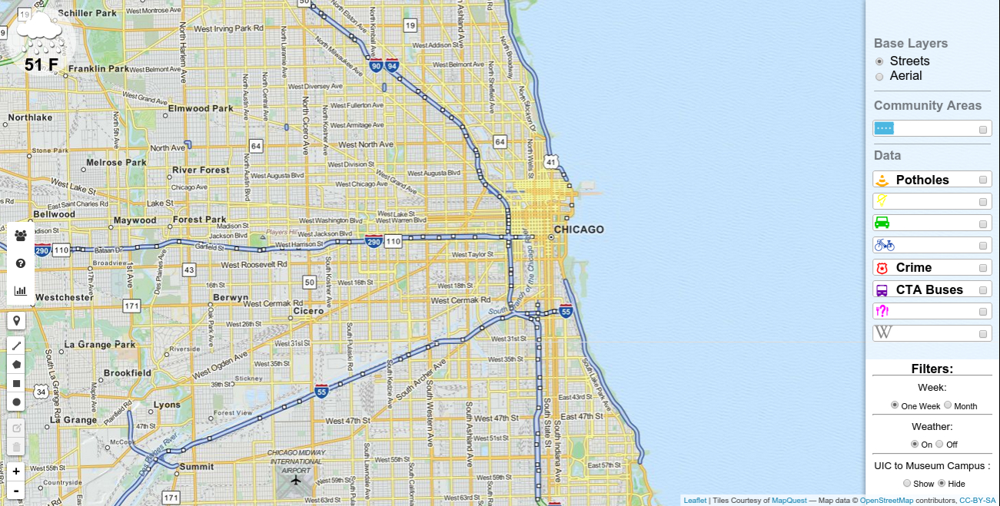
Application Controls - Left Tool Bar
There are 5 primary control types in the left tool bar as depicted in the image below.
The user can click the current location to get his or her current location on the map. If a user wants to see, for example, potholes in a specific area of Chicago, he\she can click on the "Potholes" toggle button on the toobar on the right hand side of the screen, "Viewable Data" and then draw a shape from the left hand side tool bar, "Draw Shapes Bar". We also provide the user with zoom control using the "+" and "-" buttons in the "Zoom Control Bar". Finally, if a user would like to delete a shape that he\she drew using "Draw Shapes Bar", it is possible to do so by using th e"Edit Shapes Bar". We describe each control type in more detail below. After the user draws a shape, the user can actually analyze generated visualization graphs using the graph icon button on the "Information Bar". This is a very useful feature if the user would like to compare crime for a specifically selected area versus the entire city of Chicago, or even comparing other datasets such as potholes, abandoned vehicles, etc.
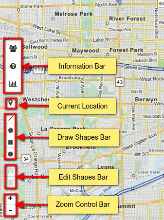
- Current Location simply zooms into the map to the current location of the user.
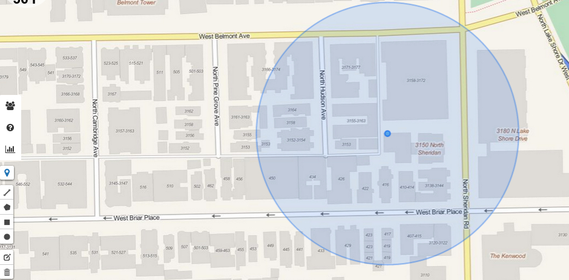
- Draw Shapes Bar gives you three options for drawing a shape on the map. Using your mouse, you can draw a three-sided polygon by clicking on the first button, the second allows you to draw a rectangle by selecting 4 sides, and finally the last shape button enables you to draw a circle. The more interesting aspect of this is that you can actually select multiple circle and square regions as well!
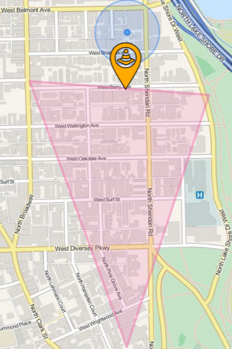
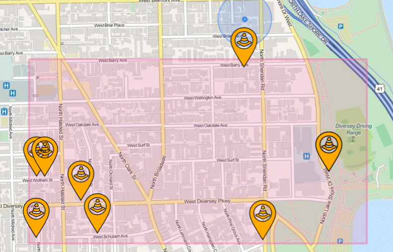
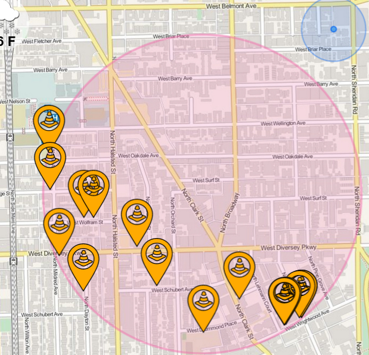
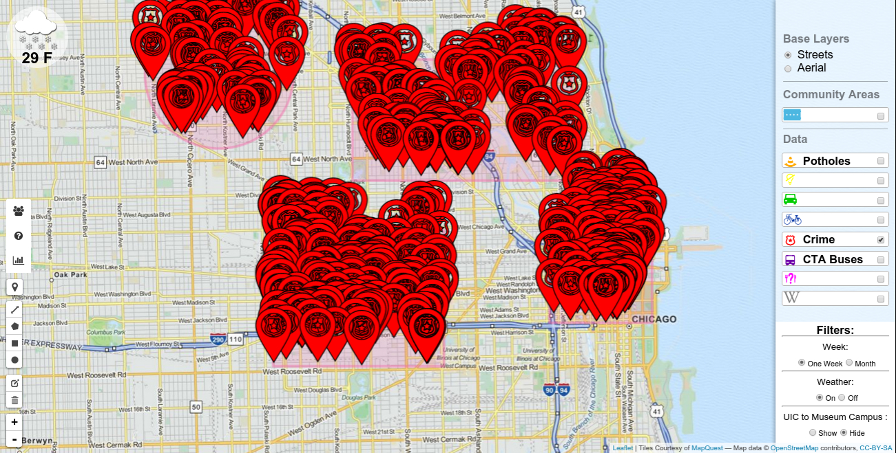
- Edit Shapes Bar enables the user to delete or resize a shape that was drawn earlier using "Draw Shapes Bar". For deleting, the user can first click the "delete" button, then using the mouse, click on the shape to delete, and finally click the save button. For resizing, the user can first click the "edit" button, then using the mouse, resize the shape on the map, and finally click the save button.
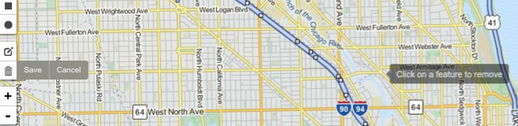
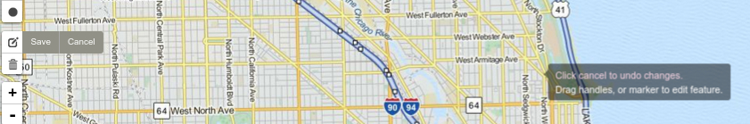
- Information Bar contains three buttons. The first two buttons contain simple textual information regarding the name of the team members and a quick-start help guide. The third button displays two visualization graphs once the user draws a shape on the map.
 The "311 Bar Chart" is a bar chart that has been grouped by overall data for entire Chicago versus selected data for the shapes drawn on the map. It is also stacked by old (at least 1 week old, up to 1 month old) versus new (within 1 week) for potholes, abandoned vehicles, street lights, and food inspection. Note that for crime, the threshold for old versus new is actually 2 weeks instead of 1 week. For easy reading, we also provide the actual raw numbers for each bar on the chart (that is, for example "Potholes" in the screen shot has 598 total potholes in the entire city versus 11 potholes in the selected region, and since there is no darker shade of blue on the bar, that implies that all of the data is at least 1 week old, up to 1 month old).
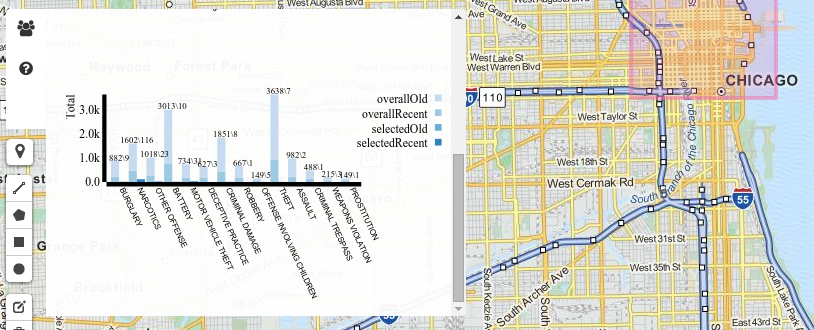
The "Crime Dist. Bar Chart" is a bar chart that has been grouped by overall data for entire Chicago versus selected data for the shapes drawn on the map. It is also stacked by old (at least 2 weeks old, up to 1 month old) versus new (within 2 weeks). The graph basically is a breakdown of the crime in the city versus selected area in more detail (burglary, narcotics, etc.). For easy reading, we also provide the actual raw numbers for each bar on the chart (that is, for example "burglary" in the screen shot has 882 total occurrences in the entire city versus just 9 reported incidents in the selected region, and since there is a small portion of darker shade of blue on the bar, that implies that most of the data is at least 2 weeks old, up to 1 month old).
The "311 Bar Chart" is a bar chart that has been grouped by overall data for entire Chicago versus selected data for the shapes drawn on the map. It is also stacked by old (at least 1 week old, up to 1 month old) versus new (within 1 week) for potholes, abandoned vehicles, street lights, and food inspection. Note that for crime, the threshold for old versus new is actually 2 weeks instead of 1 week. For easy reading, we also provide the actual raw numbers for each bar on the chart (that is, for example "Potholes" in the screen shot has 598 total potholes in the entire city versus 11 potholes in the selected region, and since there is no darker shade of blue on the bar, that implies that all of the data is at least 1 week old, up to 1 month old).
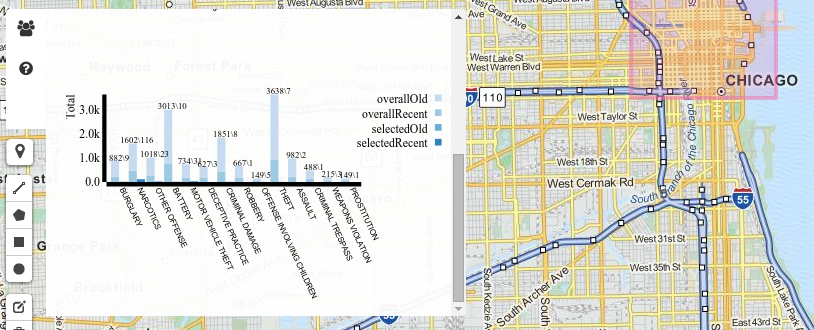
The "Crime Dist. Bar Chart" is a bar chart that has been grouped by overall data for entire Chicago versus selected data for the shapes drawn on the map. It is also stacked by old (at least 2 weeks old, up to 1 month old) versus new (within 2 weeks). The graph basically is a breakdown of the crime in the city versus selected area in more detail (burglary, narcotics, etc.). For easy reading, we also provide the actual raw numbers for each bar on the chart (that is, for example "burglary" in the screen shot has 882 total occurrences in the entire city versus just 9 reported incidents in the selected region, and since there is a small portion of darker shade of blue on the bar, that implies that most of the data is at least 2 weeks old, up to 1 month old).
- Zoom Control BarThis is a fairly straightforward control, with "+" indicating zooming-in and "-" indicating zooming-out.
Application Controls - Right Tool Bar
There are four primary control types in the right tool bar as depicted in the image below. We enabled some nice features for the user to explore. The user can switch between street view and satellite\aerial view (perhaps the user is interested in transportation and needs to understand the streets whereas another user may like to see how the actual destination area appears). The user has the option of adding the community layer using "Community View" for the pure reason that the user can better identify with various communities rather than just streets. The "Viewable Data" control enables the user to toggle between various datasets to see the conditions in (approximately) real-time for the area that the user selected (that is, using the "Draw Shapes Bar" as described in the previous section on the left toolbar). Finally, the user can filter on information as well, including one week versus the entire month of data on the map, the user can turn on or off the weather, and finally, the user can get all data for specifically just the region between UIC and Museum campus.
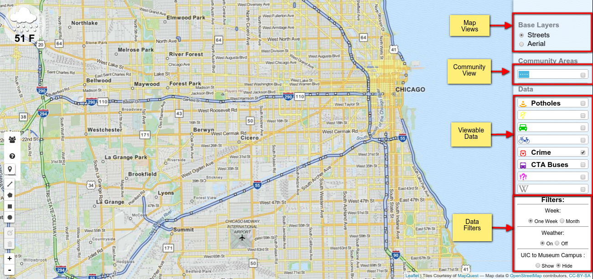
- Map Views describes the two different types of map views, including aerial (ie, satellite) and streets views. You have already seen the default street view screen shots in most of the documentation. Note that the street view is set by default. Below is a screen shot for aerial view.
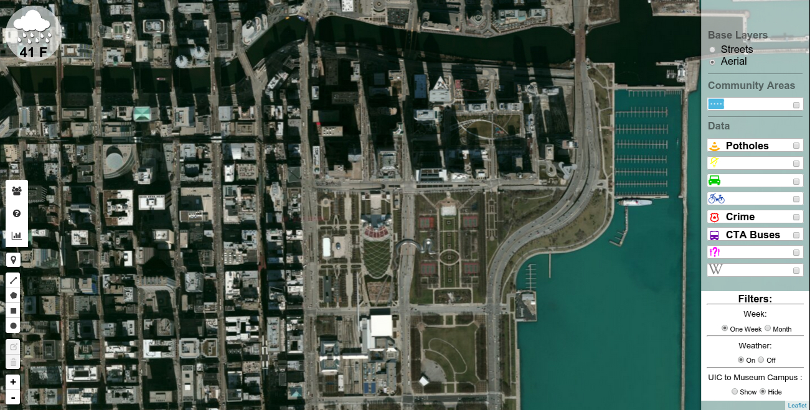
- Community View adds a community layer to the Chicago area representing all 77 communities, which are then each clickable to obtain the name of the corresponding community.
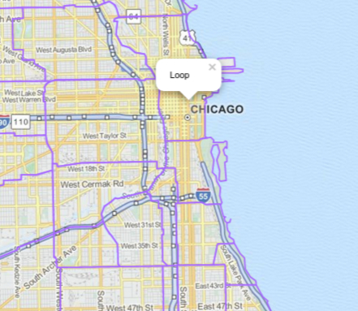
- Viewable Data is used to toggle various datasets on the Chicago map. For example, if I would like to see the latest information on potholes on the map, I would toggle "Potholes". There are 8 datasets that the user can toggle, including potholes, abandoned vehicles, street lights out, divvy bike information, crime, the CTA buses, food inspection information, and touristy wikipedia for interesting locations on the entire Chicago map. These datasets will be described in greater detail in the "Project Data" section. One interesting thing to note, is that the CTA buses actually move approximately every minute on the map so you can actually see them moving! In the screenshot example below, we have selected a circular region in downtown Chicago and included crime, CTA buses, and street lights out information.
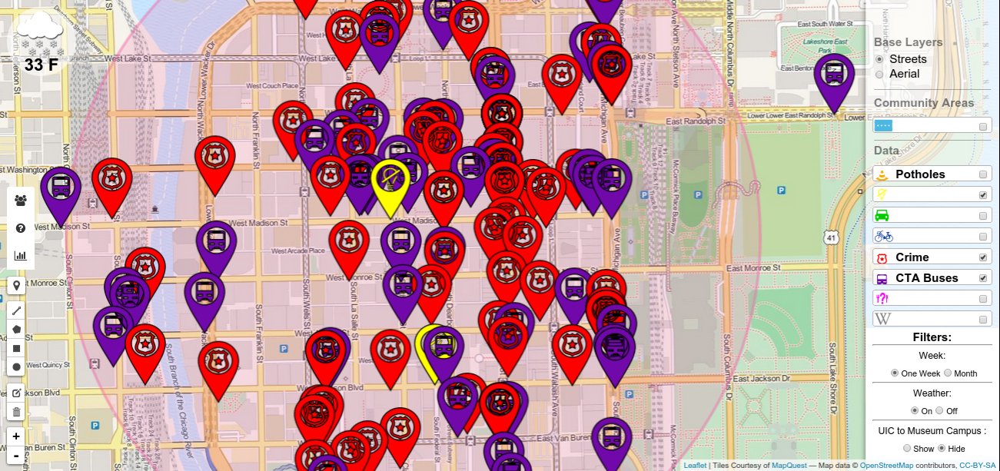
- Data Filters is a nice feature that allows the user to show or hide various things on the map, such as the weather, 1 week VS 1 month old data for only the 311 data (with the exception of crime data which is 2 weeks VS 1 month old), and finally the user can select the UIC to Museum campus area as the selected rectagular area. The screenshot below illustrates the CTA buses currently driving in the UIC-Museum campus area.
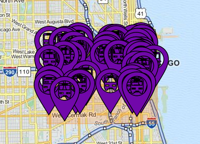
Refresh
Suppose the user is watching the application for crime as the user wants to drive to a destination taking a path with less potholes. However, suppose that a user selects a good path but then several newly reported potholes appear on that path! How will the user be able to identify this newly reported data since approximately the past 2 minutes? The refresh feature helps in exactly addressing this problem. Each time new data appears on the map within approximately the past 2 minutes, the application will identify the new data with a popup. We can see the before versus after snapshot for potholes below as an example.
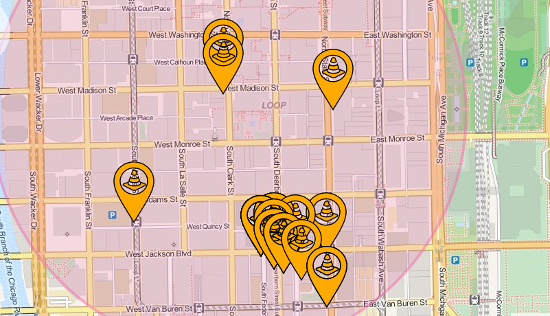
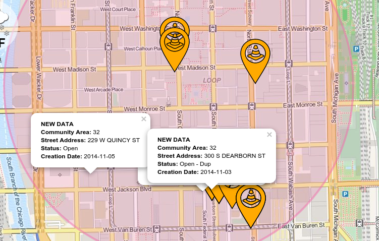